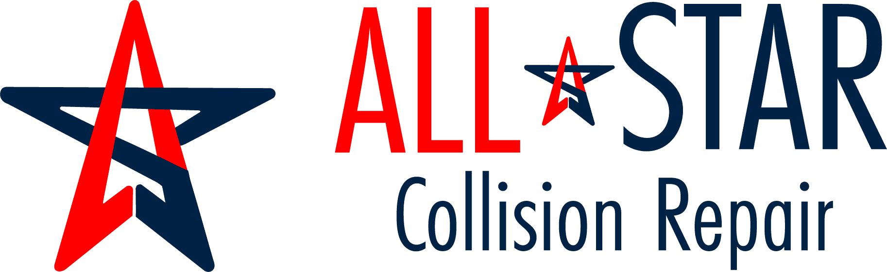

Collision repair
Repair after accidents, body damage, panel damage, structural concerns, and related collision work.

Dallas auto body, paint & collision repair
All Star Auto Collision helps Dallas drivers with collision repair, paint and body work, dent repair, bumper repair, truck body repair, frame alignment, and insurance claim repairs.
Quick answer
Call or text All Star Auto Collision at 214-699-6824. Send photos of the damage, your vehicle year/make/model, and whether insurance is involved. The team can review collision repair, paint and body work, bumper repair, truck body repair, and insurance repair next steps.
What we do
Repair after accidents, body damage, panel damage, structural concerns, and related collision work.
Paint repair, refinishing, touch-ups, color matching, panel paint, and full repaint needs by estimate.
Dents, scratches, scuffs, small impact damage, and cosmetic repairs that make the vehicle look right again.
Front and rear bumper repair, replacement prep, paint, and related alignment after impact damage.
Frame and structural checks when damage may affect fit, safety, or the way panels line up.
Help with insurance-related repairs, documentation, photos, estimates, and repair planning.
Joined at the hip
All Star Auto Collision and Better Beds work out of the same Dallas location at 3123 Cartwright St. Better Beds focuses on OEM-style pickup truck bed replacement, while All Star handles paint, body repair, collision repair, and refinishing work.
If your truck needs a replacement bed, paint work, body repair, or collision-related repair, the two businesses can work together to help get the job handled in one place.
Insurance help
If you are working through an insurance claim, All Star can help review the vehicle damage, prepare an estimate, document visible issues, and explain what needs to happen next. Coverage and approvals depend on the insurance company and claim.

Inside the shop
From damage assessment to paint and finish work, the goal is simple: clear communication and repairs that look right.


Why choose All Star?
Dallas collision repair keywords, real services
All Star Auto Collision serves Dallas and the DFW area for searches like collision repair Dallas, auto body shop Dallas, paint and body Dallas, bumper repair Dallas, truck body repair Dallas, dent repair Dallas, and insurance auto body repair Dallas.
FAQ
Yes. Call or text first if possible, and send photos so the shop can understand the damage before you drive in.
Yes, All Star can help with insurance-related repairs. Final approval and coverage depend on the insurance company and claim.
Timing depends on damage, parts, paint work, insurance approval, and shop schedule. The team can give a better estimate after reviewing the vehicle.
Send your name, vehicle year/make/model, photos of the damage, insurance status, and the best phone number for follow-up.
Ready for an estimate?
3123 Cartwright St, Dallas, Texas 75212